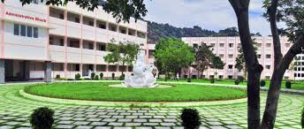

Amrita Vishwa Vidyapeetham, situated in Erachakulam,
Nagercoil is a beacon of educational excellence
which operates under the esteemed Mata
Amritanandamayi Math. Founded by Satguru
Mata Amritanandamayi Devi (Amma), our institution
is dedicated to providing holistic education,
guided by Amma’s profound vision encapsulated
in the philosophy of “Education for Life.”
